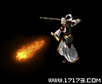 |
用咒语将内功转换为火球射向对方。修炼等级越高，杀伤力也越强。
- 1等级 : 7级开始可以修炼
- 2等级 : 9级开始可以修炼
- 3等级 : 11级开始可以修炼 |
|
火球术
|
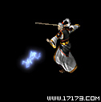 |
是将体内的魔法转换为电击气运，集中在掌心，向外射放的最简单的电击系列魔法。虽然威力不是很强大，但是对付死者系列的敌人很有帮助。只要掌握机会适当使用霹雳掌，能获得很好效果。
- 1等级 : 8级开始可以修炼
- 2等级 : 10级开始可以修炼
- 3等级 : 12级开始可以修炼 |
|
霹雳掌
|
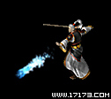 |
利用法术将体内的魔法转换为冰气射放出来。虽然冰系列魔法主要对没有耐性的敌人有较大效果，但是偶尔可以让对方冻僵，使对方行动变得缓慢。修炼等级越高，杀伤力和冻僵的概率越高。
- 1等级 : 9级开始可以修炼
- 2等级 : 11级开始可以修炼
- 3等级 : 13级开始可以修炼 |
|
冰月神掌
|
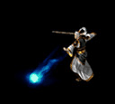 |
风系的点魔法,可以吹开等级比低很多的怪。很多怪物都怕风的,这招很适用哦
- 1等级 : 10级开始可以修炼
- 2等级 : 12级开始可以修炼
- 3等级 : 14级开始可以修炼 |
|
风掌
|
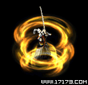 |
抗拒火环引起火焰旋风，将身边的敌人驱逐开。被敌人包围时，可以使用此魔法。但是一定要注意，不能驱逐比自己更高等级的敌人。最多可以同时往8个方向推敌人，但是对敌人的杀伤力比较弱，只能当作护身法用。
- 1等级 : 12级开始可以修炼
- 2等级 : 14级开始可以修炼
- 3等级 : 16级开始可以修炼 |
|
抗拒火环
|
|
|
诱惑之光给敌人强烈的电击冲击，攻击的不是敌人的肉体，而是灵魂，是非常可怕的魔法。中了此法术，全身麻痹，无法逃脱，甚至不分敌我乱攻击。法术高明时，还可俘虏怪物的意识，将其成为自己的手下。需要记住的是诱惑之光的魔法只维持一段时间。
- 1等级 : 13级开始可以修炼
- 2等级 : 15级开始可以修炼
- 3等级 : 17级开始可以修炼 |
|
诱惑之光
|
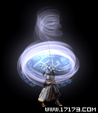 |
瞬息移动使用的是最黑暗最神奇领域的魔法，贯通时空的法术。可以瞬间移动到村庄附近，但是修炼等级低下时，会被移动到其他地方或者根本不移动。传说有一个法师过多使用此魔法，套在无尽的时空中，成了流浪者。
- 1等级 : 14级开始可以修炼
- 2等级 : 16级开始可以修炼
- 3等级 : 18级开始可以修炼 |
|
瞬息移动
|
 |
大火球是火球术的更高境界，将相当量的火气凝聚在一点喷发出来。这时候的火焰可以熔化钢铁。
- 1等级 : 15级开始可以修炼
- 2等级 : 17级开始可以修炼
- 3等级 : 19级开始可以修炼 |
|
大火球
|
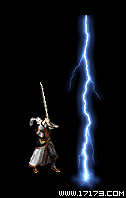 |
雷电术通过把微弱的电力射向天空，在自己所设定的地方进行雷劈。雷劈威力巨大，给敌人的打击很大，是法师必学魔法。但是，念咒文的时间比其他魔法要长，小心敌人趁机靠近你进行攻击。
- 1等级 : 16级开始可以修炼
- 2等级 : 18级开始可以修炼
- 3等级 : 20级开始可以修炼 |
|
雷电术
|
 |
冰月震天是冰月神掌的更高境界，喷发出大冰球，击中的敌人会受到严重的冰寒攻击。另外，与冰月神掌一样可以让对方冻僵，使对方行动变得缓慢。
- 1等级 : 17级开始可以修炼
- 2等级 : 19级开始可以修炼
- 3等级 : 21级开始可以修炼 |
|
冰月震天
|
 |
风系的点魔法,可以吹开等级比低很多的怪。很多怪物都怕风的,这招很适用哦
- 1等级 : 18级开始可以修炼
- 2等级 : 20级开始可以修炼
- 3等级 : 22级开始可以修炼 |
|
击风
|
 |
地狱火直线发射强烈火焰。火焰长度不是非常长，但是可以同时攻击排成一队的多数敌人。破坏力不很强，但可以同时对最多5人进行攻击。
- 1等级 : 20级开始可以修炼
- 2等级 : 22级开始可以修炼
- 3等级 : 24级开始可以修炼 |
|
地狱火
|
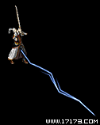 |
疾光电影可以放射出贯通力强的闪电，对排成一对的所有敌人同时进行攻击。使用方法与地狱火相似，但是放射距离更长破坏力也更大。
- 1等级 : 21级开始可以修炼
- 2等级 : 23级开始可以修炼
- 3等级 : 25级开始可以修炼 |
|
疾光电影
|
 |
冰沙掌直线喷射出寒气，攻击敌人。强烈的冰气不仅打伤敌人的肉体，还使敌人动作迟钝。据说此魔法是从叫做酷寒的地方传下来的。
- 1等级 : 22级开始可以修炼
- 2等级 : 24级开始可以修炼
- 3等级 : 26级开始可以修炼 |
|
冰沙掌
|
 |
传说此魔法是一位怀恨去世的天才法师所创建，在特定地方点燃不灭之火。点燃的火花就跟法师心中的怨恨一样，迟迟不灭熊熊燃起，如果不赶快从中逃出，会受到严重的伤害。火化燃烧的时间和每个人的魔法力有关系。
- 1等级 : 24级开始可以修炼
- 2等级 : 26级开始可以修炼
- 3等级 : 28级开始可以修炼 |
|
火墙
|
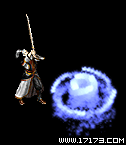 |
不知名的邪恶魔魂附在具有奇异魔力的怪物身上，支配着这些死者系列怪物。但是，这些死者系列的怪物与有生命的怪物不同，一般的攻击法是得不到什么效果的。圣言术就是为了抵抗这些死者系列怪物而创建的魔法，可以一次把恶魔摘除下来。但是，另一方面对有生命的怪物，是发挥不了任何效果。
- 1等级 : 26级开始可以修炼
- 2等级 : 28级开始可以修炼
- 3等级 : 30级开始可以修炼 |
|
圣言术
|
 |
异形换位可在一定空间内按照自己的意愿到处移动。经过幻影术的法师过了超越空间的境界，可支配空间本身。但是，空间范围是有限的。异形换位的准确度和移动可行的范围大受魔力与幻影术修炼程度的影响，这就需要相当长的时间和努力。
- 1等级 : 27级开始可以修炼
- 2等级 : 29级开始可以修炼
- 3等级 : 31级开始可以修炼 |
|
异形换位
|
 |
将纯粹的魔力变换为物理上的力量，在自己周围形成保护膜，又名叫做'魔帐术'，可以吸收外部来的攻击，达到保护自己的目的。修炼等级和魔力越高，保护膜的持续时间和吸收冲击的比率月增加，每遭受打击，持续时间会越来越短。开始修炼时，会需要很多魔法力，但是对于生命力比较弱的法师来讲，这是必学魔法。
- 1等级 : 29级开始可以修炼
- 2等级 : 31级开始可以修炼
- 3等级 : 33级开始可以修炼 |
|
魔法盾
|
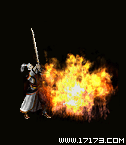 |
瞬间爆发出高温火焰，法师所发出来的内功迅速变成火焰造成大爆发。以攻击地点位中心，上下左右，两条斜线附近的敌人都会遭受打击，最多可以同时攻击9个敌人。虽然破坏力不很强，但是对快速移动的敌人很有效。
- 1等级 : 32级开始可以修炼
- 2等级 : 34级开始可以修炼
- 3等级 : 36级开始可以修炼 |
|
爆裂火焰
|
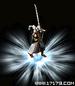 |
瞬间发生电力，法师发出的内功迅速转变为雷电造成大爆发。以攻击地点位中心，上下左右，两条斜线附近的敌人都会遭受打击，最多可以同时攻击9个敌人。发出的闪电看上去就跟美丽的雪花一样很迷人。只攻击一个目标的其他魔法相比破坏力不很高，魔法力消耗也多，先做好判断再使用。
- 1等级 : 33级开始可以修炼
- 2等级 : 35级开始可以修炼
- 3等级 : 37级开始可以修炼 |
|
地狱雷光
|
 |
引起冰雪暴风攻击敌人。使用此魔法，就会引起风雪，无数的冰块形成旋风。冰块旋转速度非常快，再加上刺骨的寒气，会给敌人造成不小的打击。冰咆哮与爆裂火焰一样，攻击范围是3x3，最多可同时攻击9个敌人。
- 1等级 : 34级开始可以修炼
- 2等级 : 36级开始可以修炼
- 3等级 : 38级开始可以修炼 |
|
冰咆哮
|
 |
龙卷风可在指定的地方引起旋风(3*3)攻击敌人。
达到法师最高境界，就可利用魔法引起强大的旋风，创建出此魔法。敌人在用魔法造成的狂风区域中持续受到打击，魔法的持续时间根据每个法师的能力不同有所差距。
- 1等级 : 35级开始可以修炼
- 2等级 : 37级开始可以修炼
- 3等级 : 39级开始可以修炼 |
|
龙卷风
|
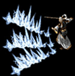 |
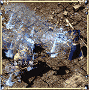 魄冰刺其实是冰沙掌的高阶魔法。当法师以自身自然力凝聚成一条冰柱并释放时，冰沙掌就诞生了；凝而不发，当时机来临那刻，积累的冰柱同时击出，是为魄冰刺。魄冰刺如同其他冰系魔法一样具备冰冻效果，如何发挥其最大作用是考验智慧的一大难题。
- 1等级 : 38级开始可以修炼
- 2等级 : 41级开始可以修炼
- 3等级 : 44级开始可以修炼 |
|
魄冰刺
|
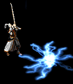 |
 怒神霹雳，消耗自身大量的MP，创造出一个雷系爆炸点。一旦爆炸点击中目标，会以迅雷不及掩耳之势散成大片霹雳向四周蔓延。被爆炸点击中固然会受到极大伤害，四散而出的霹雳也绝不好消受。幸而霹雳会随着爆炸中心的远离而减弱，否则这个可怕的魔法或许真能毁灭一个村庄乃至一个城市。 怒神霹雳，消耗自身大量的MP，创造出一个雷系爆炸点。一旦爆炸点击中目标，会以迅雷不及掩耳之势散成大片霹雳向四周蔓延。被爆炸点击中固然会受到极大伤害，四散而出的霹雳也绝不好消受。幸而霹雳会随着爆炸中心的远离而减弱，否则这个可怕的魔法或许真能毁灭一个村庄乃至一个城市。
- 1等级 : 40级开始可以修炼
- 2等级 : 42级开始可以修炼
- 3等级 : 44级开始可以修炼 |
|
怒神霹雳
|
 |
 焰天火雨看似是无数大火球的乱舞，但真正目睹后会为其强大的伤害力而咋舌。由于每个火球都集聚着施法者心中的怨恨和不平，伴随着焰天火雨凄惨的故事，这个魔法被人们视为永恒的传说。 焰天火雨看似是无数大火球的乱舞，但真正目睹后会为其强大的伤害力而咋舌。由于每个火球都集聚着施法者心中的怨恨和不平，伴随着焰天火雨凄惨的故事，这个魔法被人们视为永恒的传说。
- 1等级 : 43级开始可以修炼
- 2等级 : 45级开始可以修炼
- 3等级 : 47级开始可以修炼 |
|
焰天火雨
|
 |
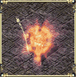 凝血离魂，这个一度被列为禁忌的魔法拥有太多的牺牲者。为了追求极限的自然力量，一族法师支流创造了以自残获取的新鲜血液来祭奠自然之神的方法，为数众多的年轻法师因为无法掌握度衡而丧命。现在这个魔法又重现人间，其后果让人思之不寒而栗。
- 1等级 : 46级开始可以修炼
- 2等级 : 48级开始可以修炼
- 3等级 : 50级开始可以修炼 |
|
凝血离魂
|